The Arcade
The Arcade
What is Frontier: Elite II you ask?
It's a space trading and combat simulation game developed by David Braben and released in 1993 for the Amiga, Atari ST, and MS-DOS. The sequel to the 1984 classic Elite. It's building on the original’s open-world gameplay with vast improvements in realism, scale, and depth.
Get lost among millions of stars, planets and moons, with thousands of them to explore. You can hyperjump between solar systems, get on orbit around planets, and even enter the atmosphere and land on them. Heck, you can even watch the sunset from their surface! Some have settlements, others have underground facilities. Some planets have space stations orbiting them where you can dock. All with a relistic space flight and landing simulation with Newtonian mechanics.
You assume the role of a starship captain, free to explore, trade, and engage in combat across the universe. You can choose your own career path, from trading and mining to piracy and bounty hunting or joining the military and going for some assasination and spying missions. You have complete freedom to choose how you wish to progress and there is no narrative or end goal. If not becoming the most powerful and rich star-lord of the galaxy, haha.
Oh, and I forgot the best, the game barely fills one floppy disk (It's 650kb)! Technically it comes on two, but the second disk contains only some save states. It's a good idea to make a backup copy and use that for saves though. If you have a hard drive, just copy the executable and launch it from Workbench.
The box contains a registration card, a game manual, a quick-start guide, a gazetter with touristic highlights from the universe and stories booklet about life on the frontier, and a map of the universe! How cool is that!? It's so huge it hardly fits on my desk!
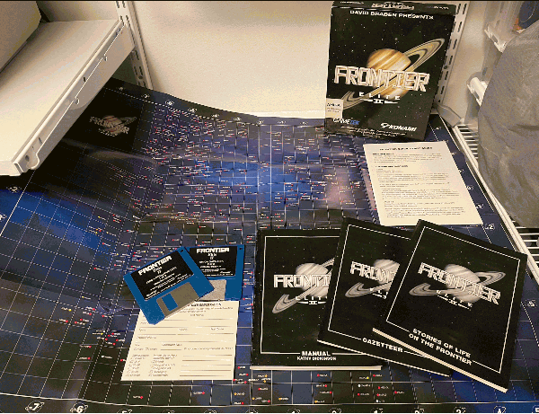The game runs even on an Amiga 500 with 1Mb of RAM, but as it uses 3D vector graphics, it tends to run slow on stock systems and benefits greatly from a faster CPU. It can be painfully slow around large objects, especially when landing on planets. You can turn down the level of details and some effects to increase the framerate a bit. The game is one of the reasons in itself why many longed for a turbo card or a higher-end Amiga. No surprise that the intro sequence was often used as kind of a benchmark of an Amiga's speed.
Insert disk 1 into your Amiga and the game will load. It starts with the intro sequence that you can skip.
You can now select the point of start among these three options:
Or from a saved game.
Once you made you choice, you land in the game immediately, so let's see how to play. You have your dashboard on the bottom of the screen. Actual shows the speed of your ship in the moment, while Set the desired speed. It takes time to accelerate and slow down. Alt shows your altitude from the surface of the nearest planet, while Relative to is the gravitational pull or the reference of the nearest planet. You can see we're on Merlin now. Our status is Landed and we're seeing the Front View of the camera.
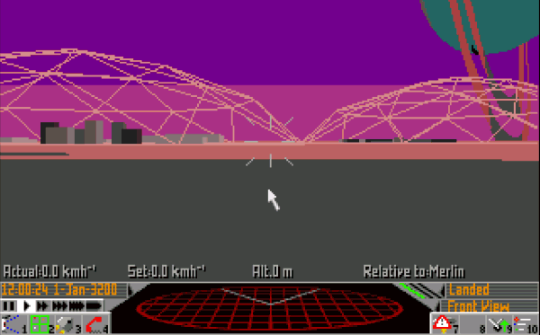Below Actual on the left there is the Current Date and below them are the Time controls. You can speed up time significantly or even pause it completely. You'll have to use it if you want to get somewhere in sanity, otherwise travel will take pretty much forever. But be careful, slow the time back if you get near your destination or will likely crash and die! If you hyperjump or get attacked, the time will slow back to normal automatically.
You can see the radar screen in the middle which shows other ships nearby (currently none) and the three angeled bars one of which is green is your fuel gauge.
The buttons on the last row are numbered and can be activated by pressing the appropriate Function-key on the keyboard too. They can be pressed several times to iterate through several screens. From left to right:
F1 - Camera view front, back or outside
F2 - Galaxy or solar system map (see
later)
F3 - Ship equipment, commander profile and cargo inventory details
F4 - Telephone
used for many things. Local services like requests, jobs, trading when landed, or calling other ships or a space
station while in space, asking for a landing permission, a price list or just broadcasting an SOS into the void,
in the hope someone will receive it
F5 - Radar or Weapon display
F7 - Engine control or
autopilot (if we have one)
F9 - Landing gear in or out
F10 - Turn planet and object name
display on or off.
ESC - Settings. You can set the level of detail sounds, music, simulation details here. But also load a save game (F7), save the game (F8), delete a save (F9) or exit to the title screen (F10).
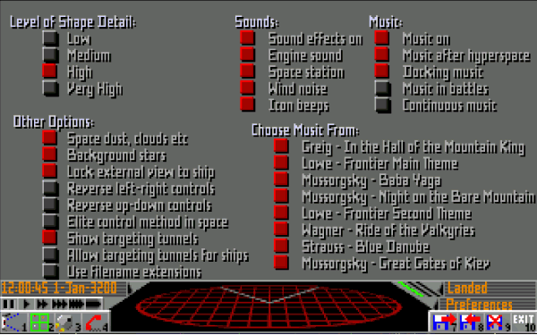Press F2 and enter the map view. This view is used to plan your travel between solar systems. You can move around with the arrow keys and as you move, different objects will get selected. You can also rotate the view in 3D if you hold down the right mouse button while moving the mouse. Pressing the C key will set the view back to default.
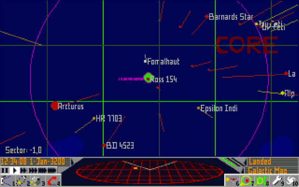This screen redefines the buttons on the bottom-right side of the screen, so you can do a lot of things here:
F6 - Information on the currently selected system and it's objects
F7 and F8 zoom in
and out
F9 display details
F10 galaxy view
When you press F6 and enter the information screen, you can click on planets and moons to reveal information about them. An important detail here is if the selected object has any Major starports to land on.
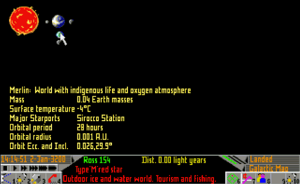Note how the button mapping changed again!
Pressing F7 here will show information about the economy of the system which is crucial to determine what to buy and sell in a given system as prices will vary across different regions of the universe. Major exports mean you can usually buy those cheaply here and sell them for a better price somewhere where those are considered Major imports. Same the opposite way. Illegal goods usually pay well on the black market, but you can get caught by the police.
F8 is for information on government, allgiance and population. Some systems are part of the Federal alliance, which is pretty safe, others are Imperial which can be more dangerous.
F10 here does almost the same as pressing F2 (or the map button twice on the main screen), even their icons are the same. It will bring up the local planet 3D view which you can rotate the same way as the other 3D map views and zoom in and out with F7 and F8. The only difference I found is that if you invoke this screen by pressing F2 (or the map button twice), you can also select destinations. Notice the bottom right icon showing a red star. Use this to pick a desination.
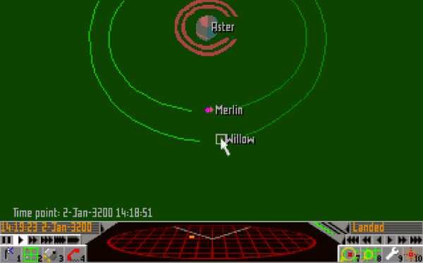It will show up on your HUD as green rectangles and aid your navigation or allow the autopilot to be used to fly you there. If you zoom onto a planet, you can select a station or settlement you want to land on. If you want to trust the autopilot with landing, it's a very good idea to save before you try, as the basic autopilot unit has a poor accuracy and sometimes can crash you.
But enough of rambling, let's take off! First you need to ask for a flight permission, otherwise launching without clearance will cost you a fine. Press the telephone F4 and ask for a Launch Request.
Clearance is granted and you can take off immediately. Press F7 to turn on the engine. You're flying! Press F9 to pull in the landing gear. Hold the right mouse button while moving your mouse and turn your ship pointing upwards, then press and hold the Enter key to add throttle. Right Shift is used to reduce throttle (even to minus to go in reverse). Pressing the Both mouse buttons or the Space key will fire the lasers, which is not a good idea right now near the base, as the defence systems and the police will shoot you down for violating the law. Wait with trying it out until you're in a distance.
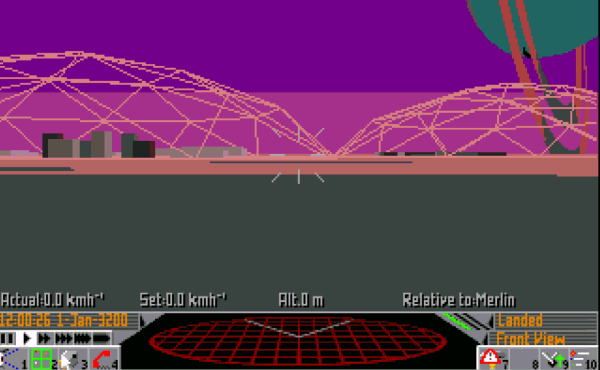Now press the camera icon F1 once to switch to the reverse view and speed up the time a little. Look, soon you're leaving the planet!
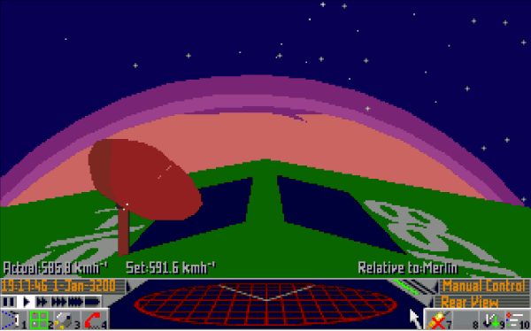Soon you're out of the atmosphere of Merlin and in outer space. It's maybe a good time to try out the hyperspace jump and the autopilot. As you start from Merlin with the Eagle Long Range Fighter, you have both on board. You can see that if you press F3 for the Equipment screen. This ship is equipped with a Class 1 Hyperdrive, so it can hyperjump in a max 8 light years radius. On the Map View you can notice a purple circle around your location, which indicates your jump distance. Don't forget it's 3D, so rotate the view, some targets might be too far above or below.
There is also a Scanner, which provides the radar view in the bottom middle of the screen, an Automatic Pilot and an Atmospheric Shielding, which allows landing on planets. There is also a 1MW Pulse Laser for close combat and some useful information about Cargo and Cabin space. You have 3 cargo space remaining, 1 is used as you're carrying 1 ton of hydrogen fuel. You don't have any extra cabins though, so you can't transport people or have crew right now. Your cash balance is 100.
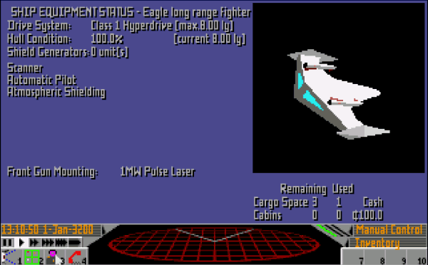You can see the cargo you're carrying if you press F3 two more times for the Cargo Inventory screen. There is a Refuel button here. If you're low on fuel, but have some hydrogen fuel in your cargo space, you can refuel by pressing it. Think twice though, as it will refuel even if you still have fuel left in your tank and waste your reserves.
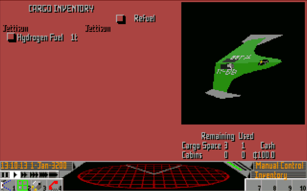Press F2 for the Map view and use the arrows to scroll and highlight Barnards Star. We're going to jump there. Now press F1 and notice that there is new button mapped to F8 on the bottom right, for hyperspace jump. Press it.
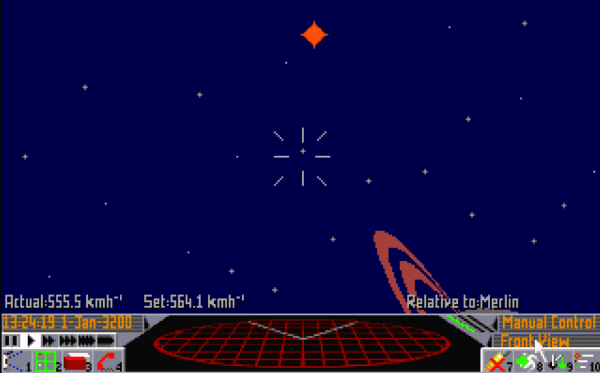You're now in the Bernards Star system! If you check the information on this system with F2, then F7, you can see that people here seem to like extensive mining and heavy industrial development, they're exporting metal stuff like robots and farm machinery, which is a minor import on Ross 154, so we can make some money here. Press F6 for the information screen of the system to find a starport to land on. There is an orbital station called Boston Base, let's go there. You can see that it's orbiting Birminghamworld
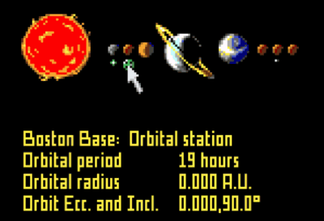So open up the close system map view with F2, click on Birminghamworld, and zoom in by holding F7 (takes a while). Press F10 to select a target for the autopilot and click on Boston Base. Now go back to the cockpit view with F1 and turn on the autopilot with pressing F7 twice (first will turn on the engines, second turn on the autopilot). Now speed up the time.
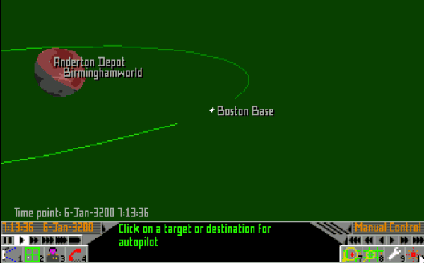When you get closer, gradually slow down the time acceleration, so the autopilot doesn't accidentally crash you into the station. If you're lucky, it will go well and you'll automatically get a docking clearance and the autopilot will fly and land you in. You can see a nice animation going through the airlocks and inside the base.
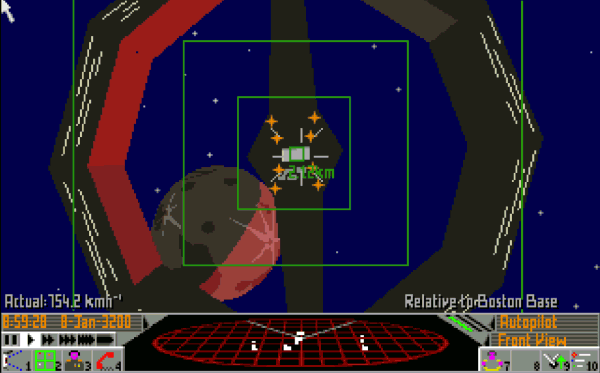The phone screen will automatically come up once you docked. You can ask for a Launch Request and leave the station immediately, or explore what this place has to offer. There are lots of things to do. You can visit the Shipyard to buy Upgrades, Repair damages, check out the New and reconditioned ships or Contact the police to pay any fines. You can also look at the Bulletin Board for any local ads. Some people want to work as a crew, others want a taxi. Sometimes there are black market ads for illegal goods (especially in more shady places), but you can also go on special missions or join the military. For taking in more people you need an Extra Passanger Cabin (in Upgrades) which is over your carrying capacity as it weights 5 tons or a Cargo Bay Life Support which is 1 ton, but is rather expensive. So let's visit the Stockmarket and do some trading first.
Here you can see all the goods for trade. The Buy/Sell columns have buttons to Buy or Sell that particular item. You can also see the price per ton, how much they have in stock and how much of it is in your cargo space. Scroll down a bit and Buy one Hydrogen fuel for the jump back to Ross 154, some Farm machinery and maybe some Metal Alloys. You're poor and can't afford much unfortunately.
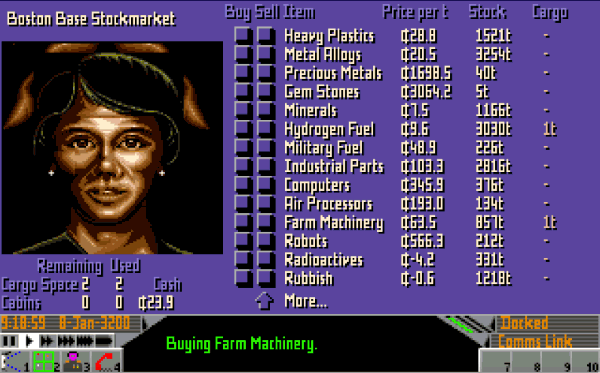Now you can ask for a Launch request and leave the station. An animation will start and soon you're in space. You know the drill now. Bring up the map again and move with the arrow keys to select Ross 154. Go back to the cockpit view and press F8 to jump back to Ross 154. As Sirocco Station on Merlin is the only starport of this system, we need to find our way back to there. Bring up the close-up system view by pressing F2 twice. Click on Aster (the Saturn like planet next to Merlin) and zoom in until you see Merlin. Click on Merlin so it gets centered and zoom in until you see the planet in full and Sirocco Station on it appears. You might need to rotate it to see it. Press F10 and click on Sirocco Station as a target for the autopilot.
Press F1, then F7 twice to acticate the autopilot. Speed up the time a bit, until you reach your destination. Slow down time when you're near and it's a good idea to save the game now, before attempting the landing. Once you landed, you can visit the Stockmarket and sell your goods for some profit.
It might happen that you get attacked along the way. A message will appear that your ship is under attack! Check the radar screen and try to rotate your ship to quickly find where the attacker is coming from and position it in front of you. It can be tricky as he is constantly on the move, but you're moving too! It's a good idea to turn off the engine as if you're moving too fast, even if you find the enemy, you'll quickly overshoot and lose it again. Don't forget, it's Newtonian physics, you're floating in a direction even without applying more thrust. Once you can find the enemy ship, click on it so it gets selected and easier to follow. Pay attention to the Distance and weather it's inreasing or decreasing and the rate of it. Add or remove throttle with Enter and Right shift to keep it at decreasing at a steady rate and not too fast. Once you're closer, shoot with the pulse lasers by pressing Space. 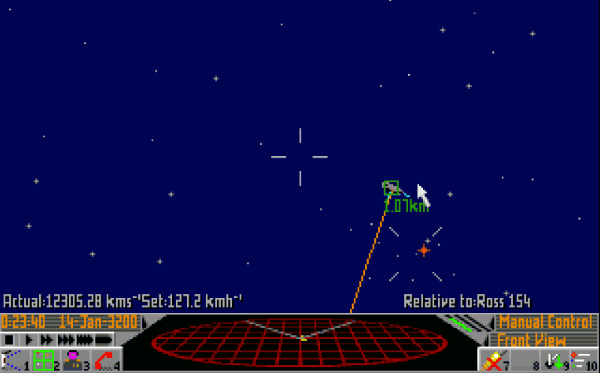
If you click anywhere on the radar display with your left mouse button, you enter the weapons screen. If you click on the rockets, a rocket will become armed and the button Fire (M) becomes visible. Clicking that or pressing the M key would fire a missile to a selected target. You have two missiles so after firing one, you need to select the other one if you want to fire again. To unarm a missile click on it again. Click on the black area to go back to the radar view.
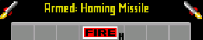Fire the missiles once you have a good view of the enemy. They can fly for quite a bit, but if you fire from far away, there is a bigger chance they get destroyed by ECM anti missile system. Later you can buy such an equiment too, which can destroy any mines or missiles within a certain range.
Winning in combat can be tricky and requires practice. A good responsive mouse can be a big help. It can also happen that you get overrun by pirates and the best is to jump away if you can. Don't get discouraged if you get killed, you need to get the hang of it. You're on your way to become an Elite pilot!
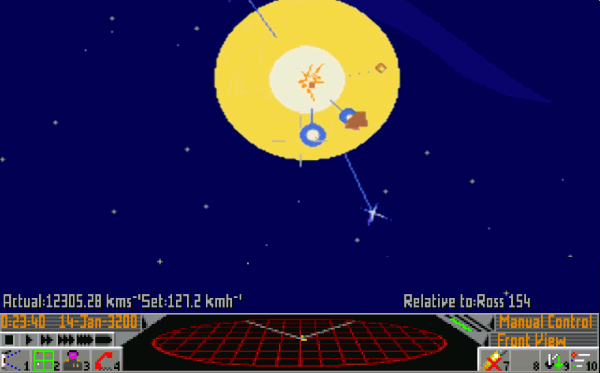There are two types of mining in the game. Asteroid and Surface mining. You can fly close to asteroids and shoot them, then collect what you find. For this you need to equip your ship with a 30MW Mining Laser, a Fuel Scoop, and a Cargo Scoop Conversion. It's pretty hard to do though as picking up small objects in space is tricky. Surface mining is more straight forward, but still hard as you need to learn to land manually (it's easier on objects with lower gravity). You need to find a planet that's rich in minerals, is not too hot (below 200 degrees celsius) and preferably not populated if you want to avoid attracting attention and land on it. You also need at least 30 tons of cargo space and the MB4 Mining Machine equipment. Use the Scanner to test the soil if it's rich in minerals and suitable for mining. If it is, click the Mining Rig button on the Weapons screen to place the MB4 on the surface. If everything went well, the MB4 will start mining immediately. You can leave and come back later (in about a month of in-game time) to collect the produce. The MB4's stores 10 tons of minerals at once.
To manage your mining operations and find your equipment again, use F3 to get to the Mining Equipment List screen. It's a good idea to have them spread around as sometimes other miners or pirates might steal your produce.
This game is huge. In an incredibly tiny package. It improves on it's predecessor in every possible way. The area to explore is wast, according to the author even 3 months of continous play wouldn't be enough to explore everything. It gives you complete freedom in choosing your play style and is not pushing you towards any narrative. It's an immersive experience that can be both relaxing and tense. Overall it's a fantastic sequel to a fantastic game, a masterpiece.